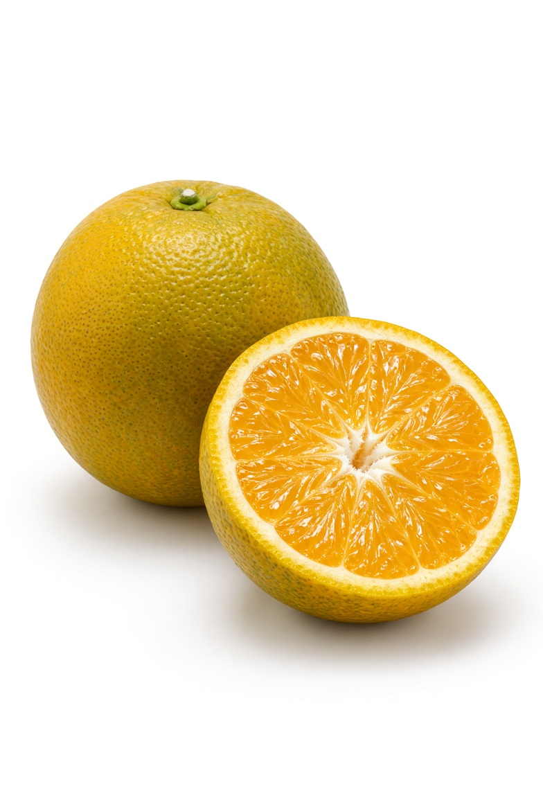
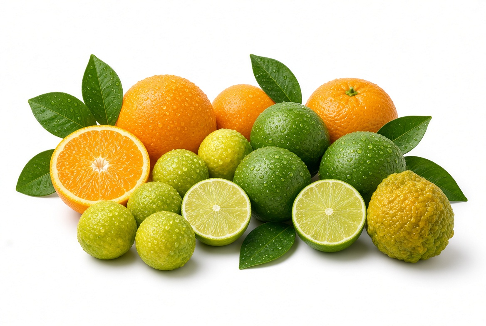
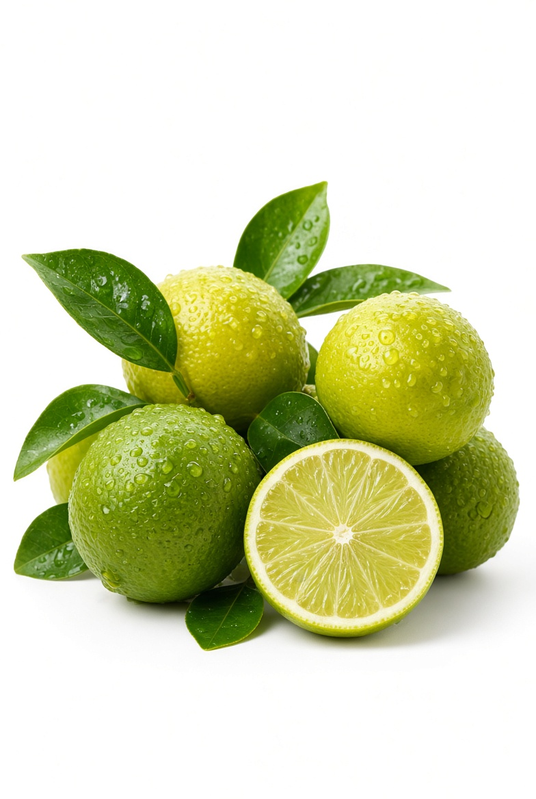
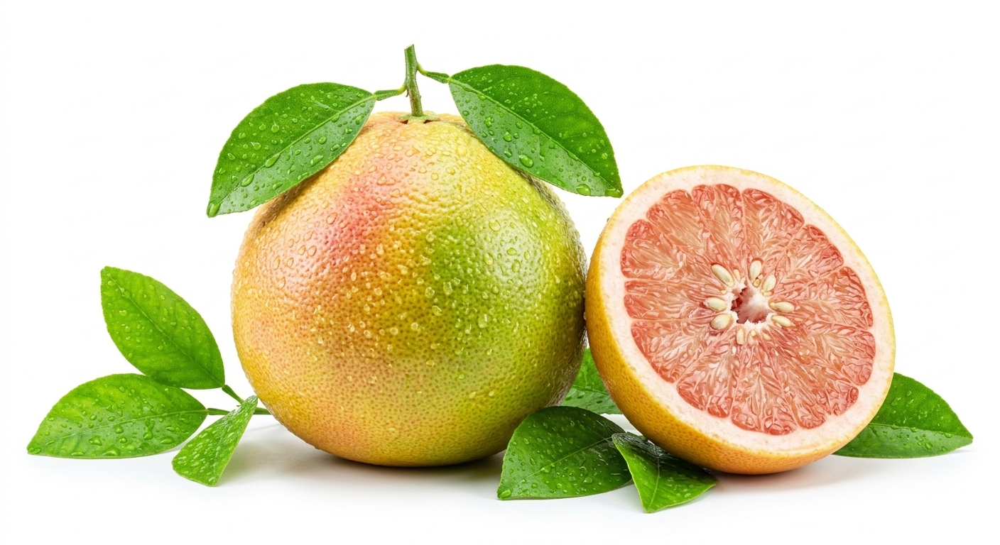

Naranjas
Dulces y jugosas, ideales para jugo
Conectamos productores agrícolas locales con compradores nacionales e internacionales. Fruta fresca, de calidad y al mejor precio.

Seleccionados con los más altos estándares de calidad

Dulces y jugosas, ideales para jugo

Perfectos para cocina y bebidas

Refrescantes y saludables
Apoyamos a productores nicaragüenses directamente
De la finca a tu puerta en el menor tiempo posible
Sin intermediarios, mejor precio para todos
Inspección de calidad en cada entrega
Únete a nuestra plataforma y llega a miles de compradores sin intermediarios.
Registrarme como Productor